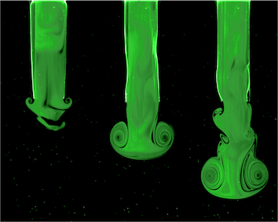
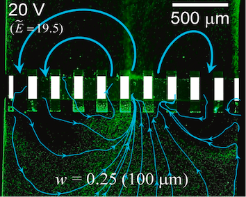
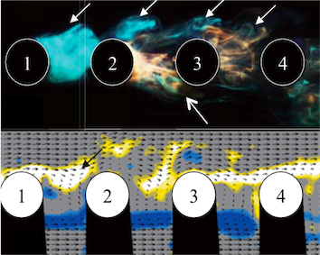
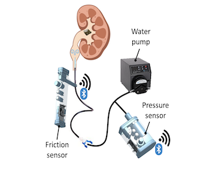
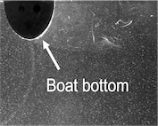

Fluid-structure Interaction
It is crucial to understand the solid-fluid interaction when large amout of momentum is exchanged between them. For example, large-enough particles (or living animal) inside the ambient flow affect the global flow structure. Individual particles not only interacts with incoming flow condition but also are influenced with each other through their wakes. Also, elastic propulsor is another example, which amplifies the power expenditure through asynchroized momentum transfer bewteen surrounding fluid. To reveal and explore this fluid-solid interaction, I studied detailed wake structures using particle-image velocimetry and derived the governing equation which gives the relevant parameters as well as the optimzied initial condition for the maximum thrust. These findings contributed to biology, medicine, multi-body behavior, evergy harvesting, and industry.
Recent Publications
-
 Flow-structure interaction of the starting jet through the flexible circular nozzle (Journal of Fluid Mechanics, 2022)
The flow-structure interaction of the starting jet through the flexible nozzle is experimentally investigated depending on the nozzle stiffness and the jet condition. Through PIV measurement and sub-pixel measurement, it is found that the flexible nozzle modifies the vortical structure of the jet and augments the thrust of the starting jet. Combining the hydrodynamic conservation equations and the linearized shell theory, the optimal condition for the maximum thrust is derived and validated with measurementss.
-
 Electroconvective circulating flows by asymmetric coulombic force distribution in multiscale porous membrane
(Journal of Membrane Science, 2021)The micro/nanofluidic device consisting of an array of ion-selective patches is developed so that micropores is formed between patches. Rigorous theoretical and experimental analysis on EC near the membrane demonstrates that asymmetric coulombic force distribution among the micropores induces electroconvective circulating flows, leading to significant enhancement of ion transport and lowering resistivity of the entire system.
-
 Flow around in-line sphere array at moderate Reynolds number
(Physics of Fluids, 2018)We performed a series of water-tunnel experiments to investigate the flow around an in-line sphere array at the Reynolds number of 1000, focusing on how the sphere wake changes by the additional spheres located behind while the spacing between them being varied. To characterize the wake, we used PIV to calculate the Strouhal number and flow statistics and performed the dye visualization to identify the three-dimensional wake structure. Finally, the pressure reconstruction is applied to flow field data and shows the hydraulic forces due to the wake modulation.
Collaboration with Industry
-
 Development of medical devices for urinary surgery
Collaborated with Yonsei Severance Hospital (2021)
Three granted patents (2022)In order to proactively determine whether the Foley catheter can be removed, equipment capable of receiving force and pressure inside the bladder is developed. And, to reduce the friction between the ureter and sheath, the liquid jet is introduced inside the ureter to incur the artificial hydronephrosis. We determined the critical jet pressure to prevent damaging the dureter and monitoring devices including the wireless pressure and friction sensors, android-based application, and peristaltic pump.
Product demonstration video (in Korean)
Undergraduate Thesis (Main Advisor)
-
 Taechang Kim Seoul Nation University (2016)
Analysis of optimal shape of the rowing boat using flow visualization